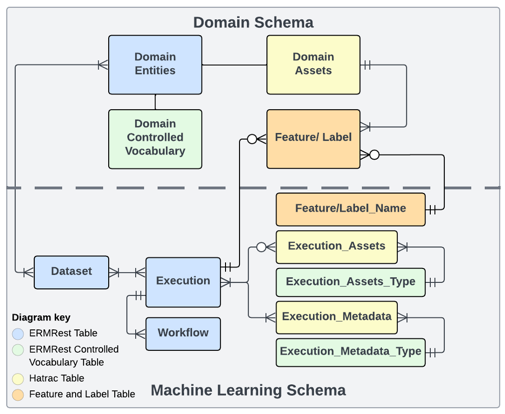

Overview of DerivaML
Overview
Deriva-ML is a Python utility designed to streamline end-to-end machine learning (ML) experiments by integrating data and metadata stored on the Deriva platform. It facilitates a seamless workflow for managing data catalogs, preprocessing, model execution, and result documentation.
Key components for Deriva-ML:
- Data Catalog: The catalog must include both the domain schema and a standard ML schema for effective data management. 
- Domain schema: The domain schema includes the data collected or generated by domain-specific experiments or systems.
-
ML schema: Each entity in the ML schema is designed to capture details of the ML development process. It including the following tables
- A Dataset represents a data collection, such as aggregation identified for training, validation, and testing purposes.
- A Workflow represents a specific sequence of computational steps or human interactions.
- An Execution is an instance of a workflow that a user instantiates at a specific time.
- An Execution Asset is an output file that results from the execution of a workflow.
- An Execution Metadata is an asset entity for saving metadata files referencing a given execution.
-
Deriva-ML library: including the following process
- Execution initiate
- ML execution context manager
-
Execution upload
-
Catalog-ML library: A tool derived from Deriva-ML for configuring data curation tasks tailored to specific data catalogs. The method including the following categories:
- Data pre-processing
- Data Analysis
Installation
To install Deriva-ML and its dependencies, use the following commands:
$ pip install deriva
$ pip install deriva-ml
$ pip install <catalog-ML>
A Notebook workflow
The Deriva-ML notebook workflow consists of an end-to-end process that includes: - Data migration from the catalog to the runtime environment. - Data preprocessing. - Execution of ML experiments. - Storing outputs and metadata back into the catalog.
Step 1: Setup the environment
Load prerequisite packages
# Prerequisites
from pathlib import Path, PurePath
import logging
from deriva_ml import DatasetBag, Workflow, ExecutionConfiguration
from deriva_ml import MLVocab as vc
import <catalog-ml>
logging.basicConfig(level=logging.INFO, format='%(asctime)s - %(levelname)s - %(message)s', force=True)
Login to the Deriva catalog
from deriva.core.utils.globus_auth_utils import GlobusNativeLogin
host = 'www.***'
catalog_id = "***"
gnl = GlobusNativeLogin(host=host)
if gnl.is_logged_in([host]):
print("You are already logged in.")
else:
gnl.login([host], no_local_server=True, no_browser=True, refresh_tokens=True, update_bdbag_keychain=True)
print("Login Successful")
Set working and caching directories
- Cache Directory: Used for saving materialized dataset bags.
- Working Directory: Stores temporary files for the execution, such as metadata and features, which are uploaded to the catalog. (The content under this directory may be deleted after successfully upload to catalog by default.)
cache_dir = Path.home() / 'data'
working_dir = Path.home() / 'data'
ml_instance = catalogML(hostname = host, catalog_id = catalog_id, cache_dir= cache_dir, working_dir=working_dir)
Step2: Execution Configuration
Before starting execution: - Define the workflow and related objects (datasets, models). - Cache all required files in the caching directory.
- Configuration Parameters
- datasets: List of dictionary that contains dataset rids found in the catalog's Dataset table, and a flag to indicate whether download the assets or not.
- assets: List of execution asset rids from the Execution_Assets table.
- execution: A descriptive Execution object.
- workflow: A Workflow object, including its type and associated code scripts.
- Instanciate the workflow by
Workflow() - The workflow type is a controlled vocabulary term. Make sure the term is already existed in the catalog,
or create the new term before use. To create a new workflow_term, you can use
ml_instance.add_term(vc.workflow_type, <term_name>, description="***"). Detailed description of how to add a new control vocabulary term in the catalog see ##ToDo - description: A textual summary of the current execution.
Initialize the execution by ml_instance.initialize_execution(config).
A full record of directory of cached data and files, and rids of current execution will be returned.\
Example:
# RID of source dataset_table, if any.
source_dataset = <dataset_rid>
# Add Workflow Vocab terms
ml_instance.add_term(vc.workflow_type, "Test Workflow", description="A test Workflow for new DM")
# Workflow instance
test_workflow = Workflow(
name="Test Sample Workflow",
url="https://github.com/***",
workflow_type="Test Workflow"
)
# Configuration instance.
config = ExecutionConfiguration(
# Comment out the following line if you don't need the assets.
# Materialize set to False if you only need the metadata from the bag, and not the assets.
datasets= [{'rid':source_dataset, 'materialize':True}],
assets=[asset_rid1, asset_rid2, ...],
workflow=test_workflow,
description="Our Test Workflow instance")
# Initialize execution
execution = ml_instance.create_execution(config)
print(execution)
Sample return:
caching_dir: /data
working_dir: /data/<username>/<catalog>_working
execution_rid: 5-SJ9Y
workflow_rid: 5-SG9W
dataset_paths: [PosixPath('/data/2-AGAW_c3a8bcbd37b4c454471d0e057c550312719006f76604db0e7f65d4a539974b12/Dataset_2-AGAW')]
asset_paths: [PosixPath('/data/.../EyeAI_working/5-SJ9Y/asset/optic_disk_crop_model.hdf5')]
configuration: datasets=['2-AGAW']
assets=['2-4JR6']
workflow=Workflow(name='Test New Workflow-multimodal',
url='https://github.com/.../.../template.ipynb',
workflow_type='Test Workflow',
version=None,
description=None)
description='Template instance of a feature creation workflow'
Step3: Access Datasets
In the notebook environment, you can save the downloaded dataset in to a DatasetBag.
It is built on top of an sqLite database, enabling easy access to the tables by table name and datasets curation.
- Build DatasetBag from downloaded data: ds_bag = DatasetBag(configuration_record.bag_paths[i])
- Find all the tables in the database by ds_bag.list_tables()
- Load the data in a table to pandas.DataFrame by ds_bag.get_table_as_dataframe(table_name)
Step4: ML Execution
Run ML algorithms within a managed context. This ensures execution status is logged back to the catalog.
with ml_instance.create_execution(config) as exe:
# Run machine learning algorithms here ...
pass
# Upload after context exits
exe.upload_execution_outputs()
Step5: Upload results
Save and upload outputs to the catalog. Use asset_file_path() to register files for upload.
Ensure that the asset types exist in the catalog before uploading.
# Add controlled vocabulary terms for asset types
ml_instance.add_term("Asset_Type", "Example_Asset_Type", description="Asset Type description")
with ml_instance.create_execution(config) as exe:
# Get paths for output files
metadata_path = exe.asset_file_path("Execution_Metadata", "metrics.json")
asset_path = exe.asset_file_path("Execution_Asset", "model.pt", asset_types=["Example_Asset_Type"])
# Save files to the registered paths
# ...
# Upload files to the catalog after context exits
exe.upload_execution_outputs(clean_folder=True)
Upon completion, all files can be accessed in the Execution Assets, Execution Metadata, and Features tables, or through the current execution in the Execution table.